Put the commands you type every day on buttons, tile as many shells as your screen fits, and give each one its own theme. It opens fast and stays out of your way.
A top bar and a side dock hold your commands: SSH logins, docker compose shells, deploy steps, log tails. Click one and it types into the focused pane.
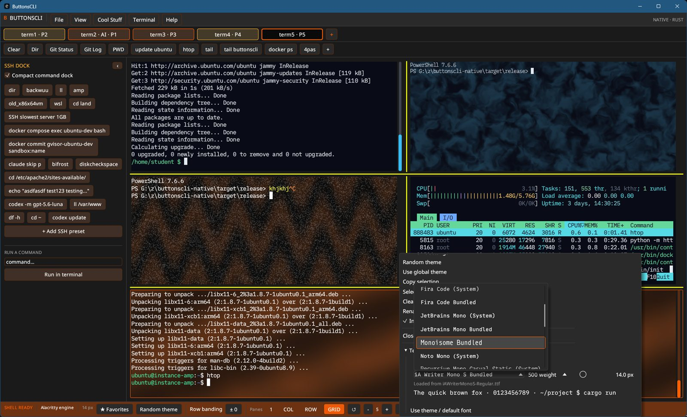
Open a simulated terminal and an AI model plays the machine. Type ls -a, htop, install packages, write a script in nano and run it. Nothing touches your computer.
It is a good way to learn the shell, demo a tool, or practice a risky command first. You write the system prompt in plain English and use any model you have a key for.
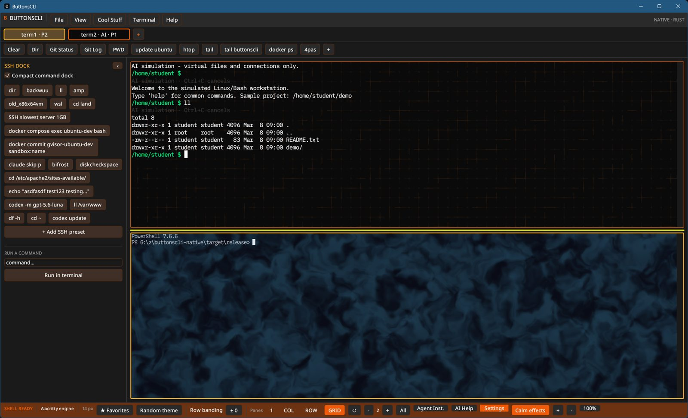
Each pane can run its own animated background behind the text, rendered on the GPU. Calm mode freezes motion, strength stays capped so text stays readable, and you can write your own in a small built-in editor or ask AI to write one.
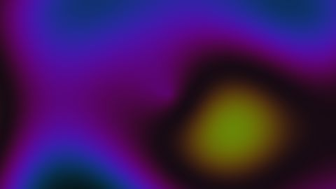
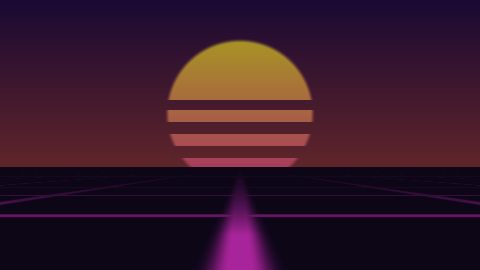
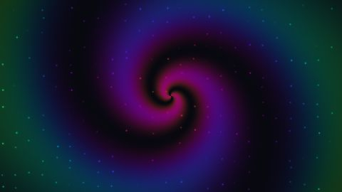
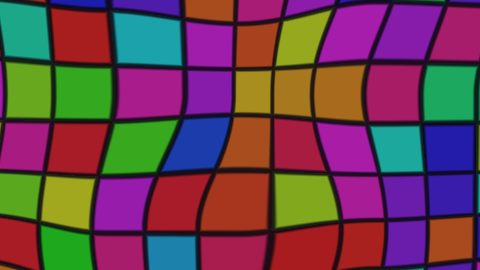
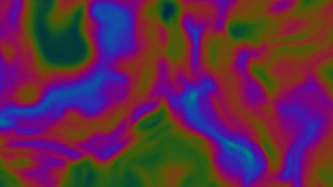
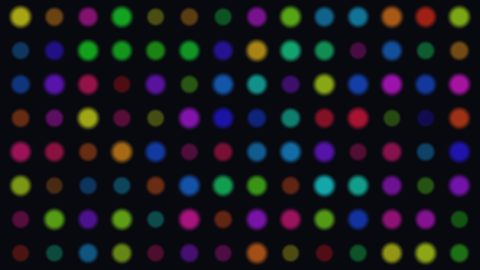
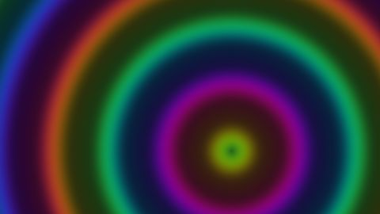
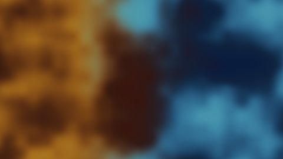
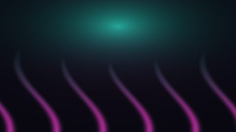
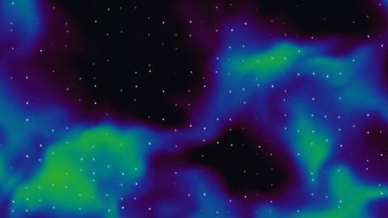
Browse a searchable library, apply a theme to everything or to one terminal, or describe a look and let AI generate a palette that keeps text readable. Fonts, gradients and effects can each come from a different theme.
26 font faces ship with the app and work offline.
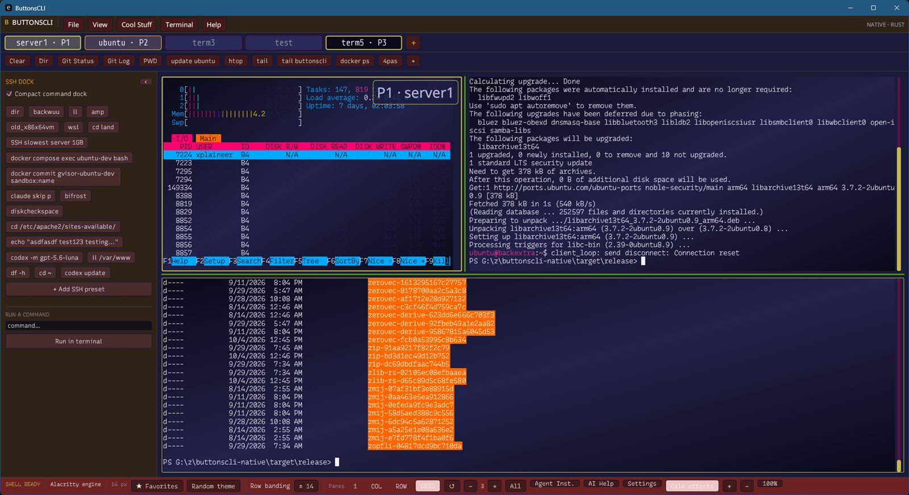
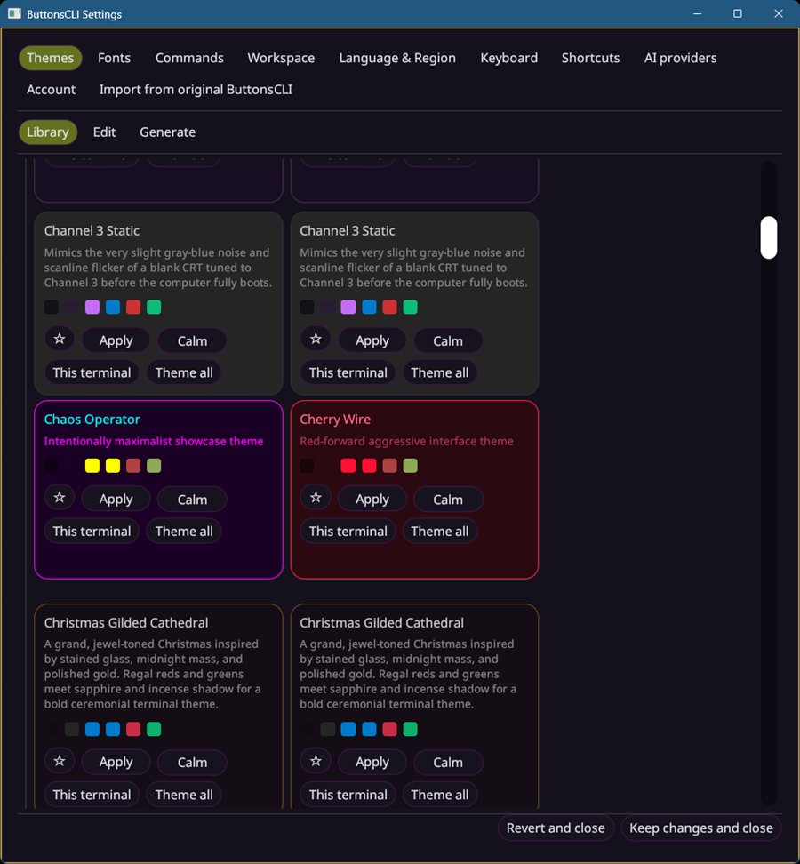
ButtonsCLI runs a local, token-protected control service. Claude Code, Codex or any MCP client can open tabs, type, run commands, wait for output and read the screen, while you watch every pane live.
# what an agent runs, while you watch the pane $ buttonsclictl open-layout --layout vertical --name api --name web $ buttonsclictl run --tab api --wait-for-text "listening on" npm run dev $ buttonsclictl send --tab web --enter "npm test" $ buttonsclictl wait-for-quiet --tab web --quiet-ms 1500 $ buttonsclictl read --tab web --lines 40 ✓ 128 tests passed
Type a one-line color expression, see it compile live, and drag sliders you attach to it. Stuck? Describe the look, or press Fix with AI, and the app asks your model for a version that compiles.
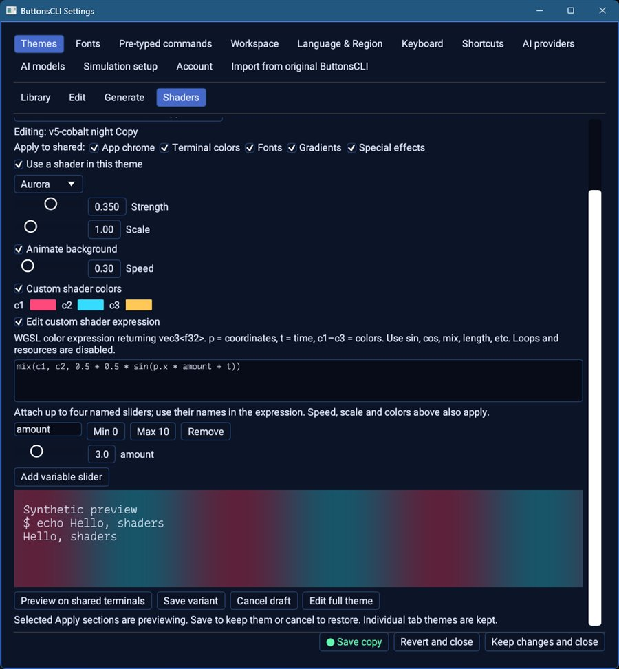